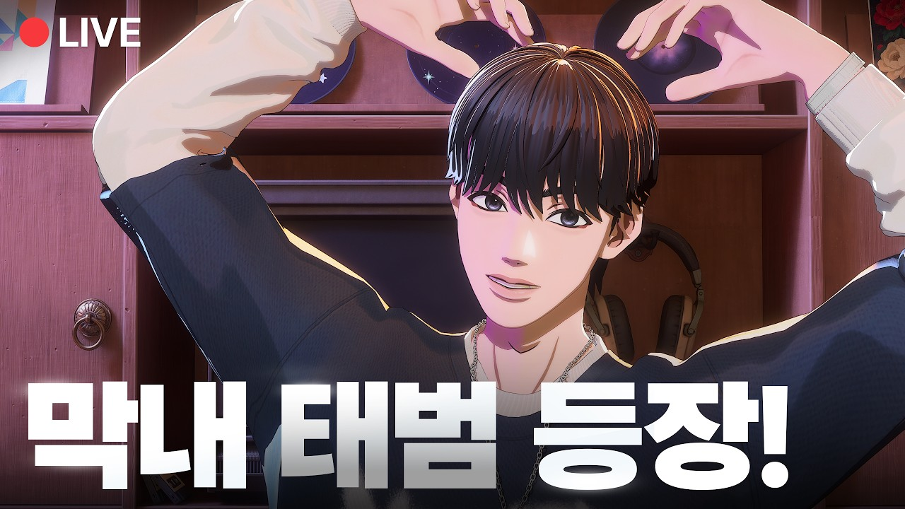
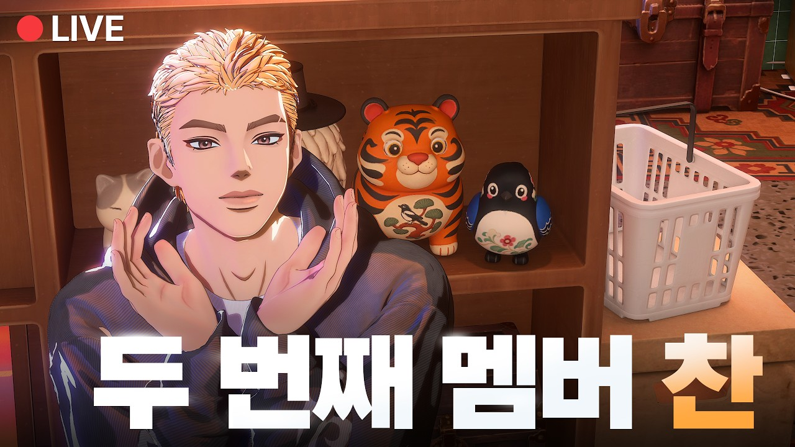

SKINZ分類：Instagram · 直播日期：2025-05-11SKINZ The Way Back’單曲發行後 Voice LiveSKINZ 載入 YouTube 播放器 正在播放的字幕A−12ptA＋繁體中文點播放後，字幕會顯示在這裡韓文 1010速度 0.75×1×1.25×1.5×2×00:00 / --:-- 在 YouTube 觀看原始影片 分享這篇@fLINE𝕏 影片翻譯評分☆☆☆☆☆選擇 1～5 星 展開雙語逐字稿 點擊查看完整內容雙語逐字稿雙語韓文繁中 自動跟隨播放文字大小 A−A＋重設字幕偏移（秒） 字幕比聲音早出現時填正數00:00:09안녕하세요.大家好00:00:12안녕하세요.大家好00:00:14>> 음. 안녕하세요.大家好00:00:19[콧방귀]00:00:27헬 guysHello guys00:00:34공방晚上好00:00:37>> 군니지와你好00:00:40>> 저녁에는 곰방화晚上要說晚上好00:00:42>> 곰방화晚上好00:00:53안녕하세요. 세요.大家好00:00:59[웃음]00:01:08안녕하세요.你好00:01:15고대 아이츠 자리가 또00:01:22자 시작해 볼까요? [콧방귀]開始吧00:01:25>> 넷 시작하죠.네好 開始吧00:01:28네. 안녕하세요, 여러분. 오늘大家好 今天00:01:30더레인 스킨즈 세 번째 방송 DJ를擔任 The Late Night with SKINZ 第三集 DJ 的00:01:33맡은 스킨즈 도빈입니다.是我 SKINZ 的 Dovin00:01:35>> 와00:01:37>> DJDJ00:01:38>> DJ 도빈.DJ Dovin00:01:39>> DJ도빈. [웃음]DJ Dovin00:01:42>> 네. 여러분 오늘도 저희 스킨즈各位 謝謝大家今天也來00:01:45라이브에 와 주셔서 감사합니다.看我們 SKINZ 的直播00:01:47오늘도 이제 저희의 새로운 멤버들이今天也有新的成員00:01:50대기하고 있습니다. 다들 이미在等著 大家都知道00:01:52누구인지 알고 계시죠?是誰了吧00:01:54>> 네. 사진이 나와 있어요. 애초에對 照片一開始就放在上面了00:01:57[웃음]00:01:58더 레이네 위스킨즈에 첫 출연하시는第一次參加 The Late Night with SKINZ 的00:02:00두 분 소개부터 부탁드립니다. 우선兩位 請先自我介紹00:02:03도입부 빨간머리 핀부터 할게요.先從唱開頭的紅髮 Finn 開始00:02:06>> 아, 네. 여러분 안녕하세요.大家好00:02:08스킨즈에서 리드보컬 담당하고 있는我是 SKINZ 的領唱00:02:10핀입니다. 음. 목소리로 처음Finn 第一次透過聲音00:02:13인사드리게 되었는데 잘 부탁드립니다.跟大家打招呼 請多多指教00:02:16>> 아00:02:16>> 야.00:02:20>> 네. 다음은 저희 스킨接著是 SKINZ 的00:02:24>> 라퍼.饒舌歌手00:02:25건이랑이 씨 인사해 주세요.Ilang Kwon 請打招呼00:02:27[콧방귀]00:02:27>> 네. 안녕하세요. 스킨즈의 메인퍼00:02:30권이랑입니다. 반갑습니다.Ilang Kwon 很高興見到大家00:02:32>> 반갑습니다.很高興見到你00:02:34>> 핀이 목소리 너무 귀엽다. 어쩜有人說 Finn 的聲音好可愛00:02:36좋니라고 하십니다. 사실怎麼辦00:02:37>> 어 좋죠.很好啊00:02:38감사합니다. [웃음] 감사합니다.謝謝 謝謝00:02:42네. 오늘은 저 도빈 그리고 핀今天有我 Dovin 還有 Finn00:02:47권이랑 이렇게 셋시서 라이브를 하게和 Ilang Kwon 我們三個00:02:49되었습니다. 여러분, 오늘따라 이제一起直播 各位 今天00:02:51다른 멤버들이 더 이제 긴장을 하고感覺另外兩位成員00:02:53있는 거 같은데 다 같이 인사라도特別緊張 我們一起打招呼00:02:55하면서 긴장을 조금 풀어 볼까요?放鬆一下吧00:02:57>> 네.對00:02:57>> 좋습니다.對00:02:58>> 자, 둘, 셋. 안녕하세요.二 三 大家好00:03:01>> 스킨 스킨입니다. 오, [웃음]我們是 SKINZ00:03:03>> 반갑습니다. 네.很高興見到大家00:03:06>> 네.對00:03:07오늘도 오늘의 라이브도 이제 좀今天的直播也00:03:09팬분들과 같이 편하게 이야기를 나눠想和粉絲們輕鬆00:03:11보는게 어떨까 해요. 이제 제가 세聊聊天 我已經是00:03:14번째 라이브잖아요.第三次直播了嘛00:03:15>> 그죠?對吧00:03:16>> 이제 어떤 이야기를 나누면은 좋을까該聊些什麼呢00:03:19고민을 이제 제가 DJ로서 이제 조금我身為 DJ00:03:21해봤는데有想了一下00:03:22>> 이제 제 최애곡이기도 하고 이제這也是我最喜歡的歌00:03:24멤버들도 최곡이라고 생각하거든요.成員們應該也很喜歡00:03:27그리고 이제 또 많은 분들이也有很多人00:03:28좋아하시는맞죠.喜歡 沒錯00:03:30그 곡 그 곡那首歌00:03:32>> 돌아오는 길 이야기를 하면 어떨까要不要聊聊 The Way Back00:03:34>> 아00:03:35>> 생각이 들어요. 어떤가요?我是這樣想的 如何00:03:37>> 좋습니다. 너무 좋습니다.很好 太好了00:03:38>> 네. 뭐 이야기할 것도 많잖아요.也有很多可以聊的00:03:40핀도 그렇고.Finn 也是00:03:41>> 어 그죠. 제가 이게 도입부를對 我負責00:03:43담당하기도 해서開頭部分00:03:45>> 이야기할게 되게 많을 것 같아요.所以應該有很多可以說00:03:46>> 아 저도 이야기할게 진짜 많을 거.我也有很多能聊00:03:47>> 어 그렇죠. 네.對00:03:49>> 이게 핀이랑 이랑이가 돌아오는 길에서Finn 和 Ilang 在 The Way Back00:03:52굉장히 중요한 파트들을 막기도 했고都負責很重要的段落00:03:54그래서所以00:03:55>> 일단은 비하인드를 이야기하기 전에 곡聊幕後故事之前00:03:59소개를 한번 간단하게 일 한번 해先簡單介紹一下歌曲吧00:04:01볼까요?00:04:01>> 네. 네. 저희 돌아오는 길은 일단00:04:04저희가 직접 작사하고 프류디싱한是我們親自作詞和製作的00:04:07>> 저작곡인데自創曲00:04:09>> 저희 또 타이틀 곡과는 상번된和主打歌的氛圍00:04:11분위기를 가진 감성적인 발라드입니다.相反 是首感性的抒情歌00:04:14>> 아, 좋습니다. 이게 저희가 솔직히很好 其實我們00:04:17개인 저 개인적으로도 그렇고 저희가我個人也是 我們都00:04:19굉장히 아끼던 곡이었잖아요. 예.很珍惜這首歌00:04:22저희가 처음으로 뭔가 이렇게 작업을也是我們第一次00:04:24한 그런 곡이기도一起這樣製作的歌曲00:04:25>> 하고네. 이게 드라마에 그 나의而且和韓劇00:04:28완벽한 비서라는 드라마의 스페셜我的完美秘書的特別00:04:31방송이랑 콜라보 그리고 이제 곡이節目合作 這首歌00:04:32이제 삽입이 됐어요. OST로也作為 OST 播出了00:04:34>> 어 맞아요.對00:04:35>> 이제 근데 저 같은 경우에는이 노래를不過對我來說 這首歌00:04:38저희가 작업하면서들을 때랑 이제製作時聽00:04:40녹음하면서들을 때랑 이게錄音時聽00:04:43저희가 막 유튜브로 이제 아 그跟後來在 YouTube00:04:45드라마에서 삽입된 OST로 들었을聽到它作為劇中 OST00:04:47때랑 또 느낌이 다르더라고요. 근데感覺都不一樣00:04:50뭐 핀는 어땠어요?Finn 覺得呢00:04:51>> 아 저는我00:04:52>> 스페셜 영상 봤어요?看過特別影片了嗎00:04:53>> 예 봤죠. 무조건 생겨봤죠.看了 當然有看00:04:56그 영상 보자마자 그 좀一看到影片00:04:58감해가스럽다랄까요?就覺得感慨萬千吧00:05:01>> 저희의 곡들이 그 드라마看到我們的歌00:05:03>> OST에 딱 똑한이 나오는 거 보고음真的成為劇中的 OST00:05:07>> 그 작업했던 장면들이랑 그 순간들이製作時的畫面和那些瞬間00:05:10좀 스쳐지나갔어요.음都在腦海閃過00:05:12>> 너무 감격스러웠다고 표현할 수밖에只能用感動來00:05:14없을 것 같아요.形容00:05:15>> 그렇죠. 이게 저희한테 이게對 對我們來說00:05:19>> 네네. 굉장히很00:05:21뜻깊은 곡일 수밖에 없잖아요. 저희가有意義 製作時也是00:05:23만들 때도 그렇고 이게 저희가而且又是我們00:05:25좋아하는 곡 스타일이기도 하고喜歡的曲風00:05:27>> 그래서 이제 좀이 곡이 각별하긴所以這首歌00:05:30하죠.很特別00:05:31>> 네.對00:05:32>> 혹시 뭐 이랑이는 뭐 여거 곡 작업할Ilang 在製作這首歌時00:05:35때뭐 기억이 남거나 네有什麼印象深刻的事00:05:37>> 뭐 그런게 있어요.之類的嗎00:05:38>> 음. 저는 처음으로이 곡을 제가我第一次負責這首歌的00:05:41레파트를 담당해서 메이킹하고 녹음할饒舌段落 寫詞和錄音時00:05:44때00:05:44>> 음. 어쨌든 고기 다 너무 저희00:05:48스타일이었고 일단而且00:05:49>> 음00:05:50>> 되게 저희한테 각별한 노래기도 했고對我們來說是很特別的歌00:05:52해서 가사를 쓰는데 진짜 신경을 많이所以寫詞時花了很多00:05:56쓴 거 같아요.음心思00:05:57>> 맞아요. 맞아 맞아요.對00:05:58>> 네또 근데 랩이 또 중요한게 사실不過饒舌不只是00:06:00가사뿐만 아니라 라임도 되게歌詞 押韻也很00:06:02중요하잖아.重要00:06:03>> 그죠? 운율도 막 있고對 也有韻律00:06:04>> 플러우도 중요하고節奏和語句的流動也很重要00:06:05>> 그렇죠. 그 그런게 사실對 那些其實就是00:06:07힙합이잖아요.嘻哈的特色00:06:09>> 요소도 빼먹을 수 없기 때문에不能少了那些元素00:06:11>> 그죠?이 이 두 마리 토끼를 어떻게所以我在想 要怎麼00:06:13하면 다 잡을 수 있을까兩邊都兼顧00:06:15>> 생각을 하다가想著這些00:06:16>> 근데 좀 잘 잡은 거 같나요?你們覺得有做到嗎00:06:18>> 아 잘 잡은 거 같아.有 我覺得做得很好00:06:20>> 저도 이랑이의 레파트 진짜 좋아해요.我也很喜歡 Ilang 的饒舌段落00:06:22>> 저도 자주 따라해요.我也常跟著唱00:06:24>> 이제 팬분들도 지금 말투부터 이제粉絲們現在也說 光是說話00:06:27래퍼다.就像饒舌歌手00:06:28>> 이랑이 이랑이 말투부터 래퍼라고他們說 Ilang 連說話方式00:06:31하시네요.都像饒舌歌手00:06:32>> 저 노래도 잘합니다.我也很會唱歌00:06:33>> 아 맞아요. 아 이랑이가 근데 노래도對 Ilang 唱歌也00:06:36잘하긴 하很好00:06:36>> 노래도 잘해서 보여 드렸으면很好00:06:38좋겠네요. 언젠가.讓大家聽到00:06:39>> 네. 언젠가有一天00:06:42>> 그래서 이게 뭐 여러분들도 그렇고大家和我00:06:45저도 그렇고 이제 이랑일 레파트를都很喜歡 Ilang 的00:06:47굉장히 좋아하잖아요.饒舌部分00:06:49>> 그러니까所以00:06:50>> 네뭐 돌아오는 길에 나오는 레파트를能不能唱一小段 The Way Back00:06:53조금이라도的饒舌00:06:55>> 들려 들려 드릴 수 있을까요?給大家聽00:06:56>> 아 비싼 건데.這個很貴耶00:06:58>> 아예 [웃음]00:07:00너무 좋다는 한번 해 볼게요.好 那我試試00:07:02>> 네네.對00:07:04어00:07:06예 다 괜찮다고 아무리 나도 껴봐도00:07:10마리처럼 번지는 비로 먹을 공어 밤도00:07:16>> 질만 나는데요.很值得付費耶00:07:19>> 감사합니다.謝謝00:07:19>> 어우 잘해요. 잘해요.謝謝00:07:21근데 이게 저희가이 노래를 녹음할我們錄這首歌時00:07:24때도 그렇고 약간00:07:25>> 에피소드들이 있었잖아요.也發生了一些趣事嘛00:07:27>> 아 그렇죠.對00:07:27>> 네.對00:07:30>> 이랑이 뭐 에피소드 있었나요?Ilang 有什麼趣事嗎00:07:31에피소드. 녹음할 때 에피소드요?錄音時的趣事嗎00:07:34>> 응응.對00:07:35>> 녹음할 때 제 가사 중에 속사포我的歌詞裡有一段00:07:38부분이 있어요.很快的饒舌00:07:39>> 응응.對00:07:40>> 근데 거기에那裡00:07:42어디였더라? [웃음]是哪裡來著00:07:48>> 깊어진 밤 무너진 내 그림자기 후에是在那句之後00:07:50나온 제품. 우리가 걸었던 계절이接下來那段00:07:52사진속 풍경이라는有照片裡的風景00:07:54>> 문장거 풍경이. 근데 그 사진那句裡面的00:07:56속이라는 단어照片裡這個詞00:07:58>> 그게00:07:59>> 진짜 발음하기 어려워요.真的很難發音00:08:01>> 사진속照片裡00:08:01>> 아, 그런가요?照片裡00:08:02>> 사진 속 풍경이照片裡的風景00:08:03>> 어렵죠? 사진속 풍경이很難吧 照片裡的風景00:08:05>> 사진 속 풍경이照片裡的風景00:08:06>> 재능이 있어요. [웃음]你有天分00:08:08>> 감사합니다.謝謝00:08:09>> 네. 재능 있으신데요?很有天分耶00:08:11>> 어, 랩을 해 볼까요? 저도那我也試試饒舌嗎00:08:14>> 저는 어려웠어요.我覺得很難00:08:15>> 음. 그죠. 그죠.對00:08:16>> 메인레퍼 하실래요?要當主饒舌嗎00:08:17>> 아니요. [웃음]不要00:08:19>> 네. 그래.好00:08:20>> 했습니다.就是這樣00:08:21>> 맞습니다. 그 저희가이 돌아오는 길對 我們這首 The Way Back00:08:23곡을00:08:24>> 네네. 저희가 인기가요 유니콘인 도쿄我們在 Inkigayo UNICON in Tokyo00:08:27>> 맞아요.對00:08:28>> 저희가이 노래를 쇼케이스 같은 그걸로用這首歌做了類似 Showcase 的00:08:30했었잖아요.演出00:08:31>> 영앤우드와 같이네.跟 Young and Loud 一起00:08:33>> 이때 사실 돌아오는 길 첫 무대에那時候是 The Way Back 的第一次舞台00:08:37이제00:08:37>> 음00:08:38>> 저희가이 곡으로 무대를 하는 것도我們第一次用這首歌00:08:40처음이기도 했고 거기서 이제 또 도입上台 而開頭部分00:08:42부분을 이제 핀 씨가 맡았단 말이죠.由 Finn 負責00:08:44맞습니다.沒錯00:08:45>> 기분이 어떠셨나요?感覺如何呢00:08:47>> 어 그 굉장히 떨렸죠. 그 다름도很緊張 畢竟是00:08:50아니고 도쿄 무대. 음.東京的舞台00:08:52>> 그 또 첫 도입부에而且又是開頭00:08:54>> 음00:08:55>> 어떻게 해서든 실수하지 않고腦袋裡一直想 無論如何都不能失誤00:08:57잘해야겠다라는 생각이 계속 머릿속에一定要做好00:08:59지배해 있었거든요.滿腦子都是這個00:09:01>> 네. 네. 그래서 멤버들은 음원音樂響起時 成員們00:09:04나오을 때 다들 막 즐기면서 몸도 막都很享受 身體也00:09:07흔느하면서 즐기는데 저만 영상 보니까跟著晃動 但看影片發現只有我00:09:11석상처럼 굳어 있더라고요. [웃음]僵得像石像00:09:14>> 그만큼 긴장을 좀 많이 한 거我大概就是那麼00:09:15같습니다. 저는緊張00:09:16>> 맞아요. 그리고 이게 저희도 알다시피對 而且我們也知道00:09:19이제 고기 난이도가 조금 있는這首歌有一定的00:09:21편이거든요.難度00:09:22>> 아, 맞아요. 맞아요.對00:09:23>> 저가 녹음할 때도 고생을 조금 했었고錄音時也吃了些苦00:09:25난이도가 조금 있다 보니. 그래서因為有難度 所以00:09:27라이브 하게도現場演唱時00:09:28>> 긴장하려면 조금 힘든 곡이긴 하죠.一緊張就會有點難唱00:09:30그래도 이제 정말 잘했다고 생각해요,但我覺得你唱得很好00:09:34저는. 근데 전부 다 잘했다고我覺得所有人00:09:36생각합니다.이랑 어땠나요?都做得很好 Ilang 呢00:09:40>> 저는 일단 천 라이브였잖아요.首先 這是第一次現場演唱00:09:44>> 그죠?對吧00:09:44>> 네. 천 라이브였는데對吧00:09:47잘 마무리했던 거 같고.但我覺得順利完成了00:09:49>> 음.00:09:49>> 이제 또 무대 영상을 저희가 나온 걸00:09:52보면서舞台影片時00:09:53>> 음.00:09:53>> 또 여러분들이 네. 곡 좋다. 보컬톤00:09:58좋다.很好聽00:09:58>> 음. 약간 이런 말씀해 주시는 거很好聽00:10:01보고 진짜 엄청 감동받았고 큰 힘을很感動 也得到00:10:04얻었던 것 같습니다.很大的力量00:10:05>> 아유, 좋습니다. 그러면 이제 저희가很好 那接著00:10:09돌아오는 길에 대해서 팬분들도關於 The Way Back 粉絲們00:10:12궁금하신 부분이 분명히 있을 거예요.一定也有好奇的地方00:10:14>> 어, 네.00:10:14>> 그래서 저희가 어제 미리 질문을 받아00:10:17놨습니다.大家的問題00:10:18>> 오,00:10:18>> 그거 한번 확인해 볼까요?00:10:20>> 확인해 볼까요?來看看吧00:10:22>> 확인해 볼까요?來看看吧00:10:23>> 확인해 볼까요?來看看吧00:10:25>> 댓글 읽어 봐도 돼요? 아니요.可以讀留言嗎 不行00:10:28[웃음]00:10:30빠밤.00:10:32돌아오는 길은 어떤 날씨에 듣는 걸推薦在什麼天氣聽00:10:34추천하시나요?The Way Back00:10:36>> 오, 날씨요.天氣啊00:10:37>> 이거는 핀부터 한번 대답해 볼까요?這題先讓 Finn 回答吧00:10:39>> 어, 저 돌아오는 길은 어떤 날씨에The Way Back 適合什麼天氣00:10:42들으면 좋을까요? 돌아오는 날은 아,聽呢 回來的日子00:10:45돌아오 [목을 가다듬음]回來的00:10:46[웃음]00:10:47>> 날씨는네.天氣00:10:48>> 저는 좀 여름밤을 생각을 했거든요.我想到夏天的夜晚00:10:50>> 어, 여름밤.夏夜00:10:51>> 네. 그것도 무지 습. 습한 여름.而且是很潮濕的夏天00:10:54그 스판 여름밤에 이제 저희 멤버들潮濕的夏夜 因為我們成員的00:10:57목소리가 청량하다 보니까聲音很清爽00:10:58>> 음00:10:59>> 그 스판 여름밤에 들으면은 되게 그在潮濕的夏夜聽00:11:01덥지만 청량함을 느낄 수 있지 않을까雖然很熱 卻能感受到清爽00:11:04국위랑도 되게 잘 어울린다고我覺得也很符合00:11:06생각해요.歌曲氛圍00:11:06>> 어歌曲氛圍00:11:08>> 괜찮네요.不錯耶00:11:09>> 괜찮네요.不錯00:11:10>> 이랑요. [콧방귀] 저는Ilang 呢 我00:11:13미형 피니형이랑은 좀跟 Finn 哥有點00:11:16명제 제목 [웃음]很棒的標題00:11:19>> 돌아오는 날回來的日子00:11:21네對00:11:22>> 저는 피니형이랑 좀 반대로我跟 Finn 哥相反00:11:25저는 약간 낙엽이 떨어지는我想到落葉飄下00:11:29약간 갈색 빛깔 가을帶著褐色的秋天00:11:32>> 음00:11:33>> 좀 떠오르는 거 같아요.會想到那樣的畫面00:11:34>> 네.對00:11:35도빈형은Dovin 哥呢00:11:37>> 아네 네00:11:38>> 저는我00:11:40날씨라기보다與其說天氣00:11:42제가 딱 이제 돌아오는 길을 했을 때想到 The Way Back00:11:45저는 좀 상황적으로 봤을 때 아我會想到情境00:11:48>> 네네對00:11:49>> 이게00:11:50어 저는 항상 집에 가는 길을我總是在回家的路上00:11:53들었어요.聽00:11:54>> 음00:11:55>> 집에 돌아가는回家00:11:57돌아가는回去00:11:58>> 돌아가는 길이네요. 집에 돌아가는是回家的路 我真的在00:11:59길에 실제로 들었고回家的路上聽00:12:01>> 이게이 노래를 들으면서 뭔가聽著這首歌00:12:04>> 집을 걸어 가면은走回家的時候00:12:06>> 네對00:12:07>> 뭔가 좀 감성적이게 되고會變得感性00:12:09>> 음00:12:09>> 좀 뭔가00:12:11>> 이렇게 푹 빠져서 갔다가 보면은沉浸其中走著走著00:12:15되게 기분이 좋더라고요.心情就很好00:12:17>> 예. 그래서所以00:12:19>> 집에 갈 때 많이 듣는 거 같습니다.回家時常常聽00:12:21>> 혹시 놀도 졌나요?當時也有夕陽嗎00:12:23>> 네.對00:12:25감성적이네요.很感性耶00:12:30>> 좋습니다.很好00:12:33>> 또 다음.接著下一題00:12:34>> 네. 그럼 다음 질문 한번가 볼까요?那看下一題吧00:12:36>> 네.對00:12:37>> 빠밤.00:12:38>> 빠밤.00:12:39>> 돌아오는 길 작업하는데 혹시 막히는製作 The Way Back 時00:12:42포인트 같은 데가 있었는지.有沒有卡住的地方00:12:45>> 막히는 포인트.卡住的地方00:12:51>> 저 먼저 해 볼까요?我先說吧00:12:52>> 네.對00:12:53저 작업할 때 그 가사 같은 거는製作時 歌詞方面00:12:56조금 더 모두의 공감이 가게想讓大家更有共鳴00:12:59>> 음00:13:00>> 작업하려다 [목을 가다듬음]因為想做到這點00:13:00보니까 가사에서 조금 막혔던 거因為想做到這點00:13:03같아요. 저음有點卡住00:13:04>> 가사 그죠? 저희가 가사에도 신경을歌詞 對 我們在歌詞上00:13:06많이 썼죠. 네네花了很多心思00:13:09멤버들의 생각을 다 합쳐서 또要結合成員們的想法00:13:11사람들이 공감을 이끌어내야 되니까又要讓大家產生共鳴00:13:13조금 어려운 부분이지 않았나應該是比較難的00:13:15싶습니다. 네. 맞아요. 맞아요.地方 沒錯00:13:17그리고 저희가 이거 곡을 작업할 때도而且製作這首歌的時候00:13:20사실 멤버들의 음역대도 다르고 근데이成員的音域都不同00:13:23곡 자체가 난이도도 조금 높은 공이다這首歌本身又有難度00:13:26보니까 저희가 파트 짤 때도所以分配段落時00:13:29>> 엄청 고생을 하긴 했었죠. 파트也費了很多心思00:13:32부분에서도.在分配段落這方面00:13:32>> 아 맞죠 맞죠.在分配段落這方面00:13:35>> 피나 나는 너만 보면 말문이 막혀요.Finn 我只要看到你就說不出話00:13:38[웃음]00:13:39>> 왜 왜 그러시죠?為什麼呢00:13:41>> 좋은 건가요? 긍정적인 건가요?是好事嗎 正面的意思嗎00:13:44>> 좋습니다.很好00:13:45>> 네.對00:13:47그러면 이랑이는요那 Ilang 呢00:13:50막히는 부분이 있었나요? 아, 저는有卡住的部分嗎 我00:13:51저도 사실其實也是00:13:53막히는 부분이라기보다는與其說卡住00:13:55>> 음,00:13:57>> 아까 피니형이 말했듯이就像 Finn 哥剛剛說的00:13:59>> 응,對00:14:00>> 뭔가 가사의 신경을 되게 많이 쓰고很在意歌詞00:14:03>> 응응.對00:14:04>> 그러다 보니까 사실 처음부터 원래所以其實一開始00:14:06좋았지만 어떻게 하면 더 좋아질까라는就很好 但一直想怎麼更好00:14:10고민이 좀 많았던 거지 막히는 부분은比較多是在想這個00:14:12딱히 없었던 거 같습니다.沒有特別卡住的地方00:14:15>> 수월했다.很順利00:14:16>> 역시 래퍼不愧是饒舌歌手00:14:17>> 수월하죠.很順利00:14:18[웃음]00:14:20좋습니다. 그럼 다음 질문으로 한번很好 那接著00:14:22넘어가 볼까요?下一題吧00:14:23>> 네. 다음 질문 도빈이형이 한번下一題請 Dovin 哥00:14:27>> 각자各自的00:14:30파트 녹음 때 어려웠거나 특히 신성段落錄音時 有沒有困難或特別00:14:33신경 써서 부른 부분이 있었나요?用心演唱的部分00:14:37이거 뭐 피니부터 대답해 볼까요?這題先讓 Finn 回答吧00:14:38>> 아, 네. 신성 써서 부른 거요?特別用心演唱的部分嗎00:14:42>> 신성 신경 써서特別用心00:14:44>> 저는 진짜 도입부를 맞다 보니까因為我負責開頭00:14:48>> 네. 그 도입부가 되게 중요하다고我覺得開頭00:14:49생각을 하거든요. 노래.對一首歌很重要00:14:51>> 음.00:14:51>> 여러분들이 들었을 때 딱 사로잡을 수00:14:54있는 그 무언가가 뭐가 있을까 생각을那個東西是什麼00:14:57되게 많이 하고我想了很多00:14:58>> 그 음의 길이나音符的長度00:15:00>> 그 가사의 그 발음이나 그런 걸 되게歌詞的咬字那些00:15:03좀 신경을 많이 썼던 거 같아요.都特別注意00:15:04>> 그렇죠.對00:15:05>> 네. 한번 듣고 여러분들이 좋아해希望大家一聽00:15:07주시면은 좋을 것 같아서就喜歡00:15:09>> 음.00:15:09>> 되게 열심히 도입부랑00:15:12>> 그리고 훅 거기를 되게 많이 신경 쓴還有副歌 都下了很多00:15:14거 같습니다.心思00:15:15>> 오. 이랑이는요?Ilang 呢00:15:18저 같은 경우는음我的話00:15:21신경 써서 부른 부분 저는 예진特別用心演唱的部分00:15:26[웃음]00:15:26>> 제 레파트00:15:29더 신경 써서 부르긴 했는데요. 근데我特別注意 不過00:15:33이게 사실 이런 분위기의 곡은 또像這種氛圍的歌00:15:36가사 전달력이 되게 중요하잖아요.歌詞的傳達很重要嘛00:15:38>> 그죠? 아, 그렇죠. 그래서 가사를對 所以00:15:40한 글자 한 글자 뭔가 잘 전달하려고想把每個字都好好傳達00:15:43또박또박하면서咬字清楚00:15:45이제 또 멋짐도 빼놓지 않으면서同時也不能失去帥氣00:15:47>> 음00:15:49>> 그런 걸 신경 썼다고 말씀드릴 수可以說我在意的是00:15:51있을 것 같습니다.這些地方00:15:53>> 이제 팬분들도 저 돌아오는 길 가사粉絲也說 The Way Back 的歌詞00:15:55너무 위로 된다.很能安慰人00:15:57>> 위로 된다. [목을 가다듬음]很有安慰的力量00:15:59>> 공감을 이끌어내서 정말能引起共鳴00:16:00>> 좋네요.真好00:16:01>> 네. 감사드립니다.謝謝00:16:02>> 감사드립니다.謝謝00:16:03>> 감사합니다.謝謝00:16:04>> 핀의 진정성 있는 도입부 목소리.Finn 在開頭充滿真心的聲音00:16:07감사합니다.謝謝00:16:08>> 뭐 그럼 뭐 잠깐 불러볼까요?那要唱一小段嗎00:16:11>> 진정성 있게.真心地唱00:16:12>> 오케이. 하겠습니다. 이렇게好 我來唱00:16:16괜찮다고00:16:17아무리00:16:19웃으려 해봐도00:16:22너무 떨리는데요.好緊張00:16:23>> 와00:16:23>> 와00:16:25>> 아 감사합니다.謝謝00:16:26>> 와 너무 좋습니다.太好聽了00:16:30>> 도빈 형도Dovin 哥也00:16:32>> 카시 매차 스키 가사가 정말 좋다고很喜歡歌詞 有人說歌詞很好00:16:35하시네요.00:16:35>> 아 가사00:16:36>> 아리가고 잘 아가도 잘謝謝00:16:39>> 일본어도 수급이신데요日文也很厲害耶00:16:41>> 아닙니다. 입니다. [콧방귀]沒有啦00:16:44>> 역시 말이더.不愧是隊長00:16:45>> 아유 저는 저는 사실 여러분들도其實我 大家也知道00:16:49아시다시피 제 파트가 좀 어려운我的段落有很多00:16:51부분이 많아요.比較難的地方00:16:52>> 네.對00:16:53>> 그래서 항상 부르기 전에 조금所以每次唱之前00:16:57>> 제로콜라를 마시나요? [웃음]會喝零卡可樂嗎00:17:00>> 아니 그 제로콜라不是 那個零卡可樂00:17:04>> 음. 네. [웃음]00:17:06항상 긴장을 하게 되는 거 같아요.總是會緊張00:17:08그래서 노래 부르기 전에 뭐 모든所以唱之前 雖然每首歌00:17:10노래를 하기 전에 긴장을 하긴 하지만都會緊張00:17:12>> 네.對00:17:13>> 그 부분이 항상 신경이 쓰이는 거那個地方總是讓我在意00:17:15같습니다. 제 파트가我的段落00:17:16>> 그래도 되게 잘됐잖아요. 그 부분이但唱得很好啊 那段00:17:19되게 형 목소리 도빈형 목소리랑 너무跟 Dovin 哥的聲音00:17:22잘 어울려서很合00:17:22>> 아很合00:17:23>> 전 너무들을 때도 항상 그 부분我每次聽都會00:17:25곱씹어서 듣습니다.反覆品味那段00:17:26>> 아 감사합니다. 감사합니다. 곡들이謝謝 有人說歌曲00:17:29다 너무 예뻐서 음원으로 빨리都很美 希望趕快00:17:30나왔으면 좋겠다고 하십니다.推出音源00:17:31>> 어 저희 음원我們的音源00:17:33언제 나오죠?什麼時候推出呢00:17:35뭐 네.00:17:36>> 음. 공지公告00:17:37>> 최대한 빠른 시내. 네.會盡快00:17:41>> 네. 그렇습니다. 다음 질문 한번가對 接著00:17:44볼게요.下一題00:17:46>> 각자 탐나는 멤버 파트 알려 주세요.請說說最想唱哪位成員的段落00:17:50>> 아, 각자 탐나는 멤버 파트.想唱的成員段落00:17:52>> 도빈형 있으신가요?Dovin 哥有嗎00:17:54>> 저는我00:17:55랩파트죠.是饒舌段落00:17:57>> 오. 오.00:17:59>> 네.對00:18:00>> 음.00:18:00>> 그렇군요. 네. 뭐 한번 보여주00:18:03[웃음]00:18:06아시다시피 제가 랩을 잘하진大家也知道 我不太00:18:08않잖아요. 그니까 근데 원래 가질 수會饒舌 但人總是00:18:10없는 것에 대한 욕망이 있는 것이기渴望自己沒有的東西00:18:12때문에00:18:13>> 항상 이제 랩 파트를 하고 싶죠.所以總是想唱饒舌段落00:18:15>> 근데 도빈이형 제가 듣기에는 랩 되게但 Dovin 哥 我聽起來覺得你00:18:17잘해요.饒舌很好00:18:18>> 그러니까요. 어느 정도 수준급이던데對 有一定水準耶00:18:20다 모든 능력치가 요요 [웃음]各方面能力都00:18:23>> 다음에 보는 걸로 할까요?下次再展示吧00:18:27>> 네.對00:18:28>> 좋습니다.好00:18:30>> 피니엄은요?Finn 哥呢00:18:32저는 그 도빈형의我有點想唱 Dovin 哥的00:18:35브릿지 조금 탐나긴 했어요.橋段00:18:38>> 왜냐하면은因為00:18:39>> 그게 고게 분위기를 한 번에 마지막에我覺得那段在最後00:18:42정리해 주는 역할을 한다 생각을有把整首歌的情緒00:18:43하거든요.收束起來的作用00:18:44>> 네네.對00:18:44>> 그래서 도빈형이 더 잘 어울렸긴對00:18:47했지만00:18:47>> 탐은 [목을 가다듬음] 내고 있었다.00:18:49마음속으로.還是有想唱00:18:51>> 부르셔도 되는 돼요. [웃음]你也可以唱啊00:18:55>> 여임자가 나타났더니既然有想唱的人出現了00:18:57>> 네. 1랑이那 Ilang00:18:59>> 파트想唱的段落00:19:01저 같은 경우는我的話00:19:04저 후렴我想唱副歌00:19:07>> 전 다이리형 파트Dael 哥的段落00:19:09>> 저는 또 이랑이 후렴을 들어봤잖아요.我聽過 Ilang 唱副歌00:19:11>> 예. 아 [콧방귀] 근데00:19:13약간 이런 원공 느낌이 아닌不太像原曲的感覺00:19:17>> 약간 힙합과 락이 섞有點嘻哈混合搖滾00:19:19>> 맞아요. 맞아요. 맞아요.對00:19:20>> 그런 느낌으로 바뀌어 버리기 때문에因為會變成那種感覺00:19:22제가 안 하길 잘했죠. 사실. 근데所以還好不是我唱 但00:19:24저는 그 스타일도我也覺得那種風格00:19:26>> 되게 좋았어요.很好00:19:27>> 그 버전도 듣고 싶네요.也想聽那個版本00:19:28>> 네. 그 버전도 굉장히 좋긴那個版本也很好00:19:29했습니다. 제 스타일이긴 했어요.是我喜歡的風格00:19:32>> 나중에 기회가 된다요.以後有機會的話00:19:33>> 아, 네.00:19:34>> 탐나는 파트 바꿔 부르기 콘텐츠有人說期待互換想唱段落的00:19:36기다릴게 이러시네요.企劃00:19:38>> 아.00:19:38>> 어. 이것도 되게 재밌을 거 같아요.00:19:40네.對00:19:41>> 나중에 저희가 한번 추진을 꼭 해之後一定會試著00:19:42보겠습니다.推動看看00:19:43>> 네.對00:19:43>> 네. 그때는 이제 레퍼 도빈으로對00:19:46>> 레퍼도빈饒舌歌手 Dovin00:19:47>> 한번 보여 드리도록 하겠습니다.的身分展現給大家00:19:50다음 질문 볼게요.看下一題00:19:53오, 돌아오는 길에서 마지막 후렴想知道 The Way Back 最後一次副歌00:19:55코러스 누가 한 건지 궁금해요.的和聲是誰唱的00:19:58>> 후렴 코러스코스副歌的和聲00:20:00>> 이게 애드립을 말씀하시는 거겠죠?應該是在說即興花腔吧00:20:03>> 네. 아무래도 3절 거기 말씀하시는應該是說第三段那裡00:20:05거 같은데.00:20:06>> 네. 네. 네.對00:20:07그러면은 이거는 사실 마지막 후령最後的副歌00:20:11코로스는 제가 코로스 메인 멜로디를其實是我唱00:20:15부르면서主旋律00:20:17이제 다엘 형이然後 Dael 哥00:20:18>> 다엘형이 뒤에Dael 哥在後面00:20:19>> 뒤에 애드립을 쌓고疊上即興花腔00:20:20>> 아 네네00:20:22>> 그 뒤에 피니형도後面還有 Finn 哥00:20:24>> 저도我也有00:20:25>> 못못 볼테니까 여기 불러요.네我唱的是那裡00:20:29>> 그 이게 질문이 되게 신선한 거這個問題很新鮮00:20:31같아요.00:20:33궁금해 주셔서 감사하네요. [웃음]謝謝你們好奇00:20:37디테일까지.連細節都注意到了00:20:37>> 네. 후련 코로스를 궁금해하실 줄은連細節都注意到了00:20:40몰랐거든요.感到好奇00:20:42>> 근데 정말 좋은 질문이었던 거是個很好的問題00:20:43같습니다.00:20:44>> 궁금해하시구나.原來會好奇這個00:20:45>> 네. 어, 진짜00:20:47>> 감사합니다.謝謝00:20:50>> 거기 너무 이쁘다고 하십니다.有人說那裡很美00:20:52>> 어.00:20:52>> 아, 근데 거기가 진짜 아름답긴00:20:54해요. 그림이.整體的畫面00:20:55>> 맞아요.對00:20:56>> 마지막 후에서 완전 터트리면서最後的副歌完全爆發00:21:00>> 정 정말 좋죠.很好00:21:02>> [웃음]00:21:03>> 답변해 줘서 너무 감사하다.有人說很謝謝我們回答00:21:05>> 감사謝謝00:21:07>> 이런 질문해 주셔서 너무 감사하고也很謝謝你問這樣的問題00:21:10[콧방귀]00:21:10>> 정리하자면 다일령이랑 제가 부분 부분00:21:12맡아서 했습니다.各自負責不同部分00:21:13>> 어00:21:15[콧방귀]00:21:16>> 다음 질문은요.下一題00:21:19>> 이랑이Ilang00:21:19>> 타이틀 제목 누가 정했나요?Ilang00:21:23>> 빠밤00:21:24>> 빰00:21:24>> 빰 [콧방귀]00:21:25>> 이거는 피니가 대답해 볼까요? 아,這題讓 Finn 回答吧00:21:28타이틀 제목은 그이歌名是由00:21:33그 후련 불러 주신 다엘형님이랑剛剛提到唱副歌的 Dael 哥00:21:36그리고 프로듀서還有製作人00:21:37>> 아, 저희 프로듀서님我們的製作人00:21:39>> 네. 제목은 그렇게 지어 주셨고요.一起取的00:21:41>> 음.00:21:43>> 답변答案00:21:44이거밖에 없는데요. [웃음]就只有這樣耶00:21:47>> 아, 근데 저는 이게가 그 제목이 딱不過對我來說 歌名00:21:50정해졌을 때定下來時00:21:51>> 네. 저는 되게 직관적이면서 뭔가我覺得很直觀00:21:55사연 있어 보이는 제목이라서又像藏著故事的歌名00:21:57전 되게 좋았어요.所以很喜歡00:21:59>> 이게 굉장히 직관적이잖아요. 돌아오는很直觀嘛 The Way Back00:22:01길.00:22:01>> 그렇죠.00:22:02>> 그런데 사실 돌아오는 길에서但其實 The Way Back00:22:07뭔가 딱이 단어를 봤을 때 연상되는光是看到這幾個字00:22:09것들이 굉장히 많단 말이야.就會聯想到很多事00:22:10>> 그죠? 해석을 되게 다양하게 할 수對 可以有很多00:22:12있으니까.不同解讀00:22:12>> 아, 저도 막 영화 같다고 생각했어.不同解讀00:22:15아까 말했어요.剛剛說過了00:22:16>> 그걸 아까 말하셨습니다.你剛剛有說過00:22:19>> 그래서 그00:22:22무언가 많은 것을 연상시키는能讓人聯想到很多事情00:22:24제목이라서 저는 되게 좋았습니다.所以我很喜歡這個歌名00:22:25>> 네.對00:22:27좋습니다.很好00:22:28>> 네.對00:22:31>> 다음이下一題00:22:33질문은 피니형이 읽어 주세요.請 Finn 哥讀00:22:35>> 네. 다음 질문은 널 데려다 주고好 下一題 歌詞有一句00:22:38오는 길에 길을 잃었네라는 가사가送你回去後 我在回程迷路了00:22:40있는데 길치신가요? [웃음]你們是路痴嗎00:22:44길치신가요?是路痴嗎00:22:46>> 어 어떻게怎麼會00:22:48>> 근데 저희 멤버들 중에不過我們成員裡00:22:51>> 이랑이가Ilang00:22:52길치기가 조금 있어요.有點路痴00:22:54>> 제 사실 여기 오늘 오는데도其實我今天來這裡00:22:57길을 잃었어요.也迷路了00:22:59>> 진짜 가사처럼 길을 잃어 가지고真的像歌詞一樣迷路了00:23:01>> 일하러 오는 길에 길을 잃었네.來工作的路上迷路了00:23:03>> 여기 오는 길에 한 두 블록을 더來這裡時多走了兩個街區00:23:06갔나 제가?음吧00:23:07>> 도와 가지고 다시 돌아왔죠. 돌아오는繞了一圈才回來 回來的路00:23:10길?00:23:10>> 아 돌아오는 길.00:23:14저는 근데 저도 원래 기회를 좀 자주我以前也00:23:18잃어버렸었는데常迷路00:23:19>> 요즘에는 현대문명이 잘 발달돼 있어서但現在現代文明很發達00:23:22>> 아 그죠. 지도앱 지도앱이 있죠.對 有地圖 App00:23:24>> 네. 그걸 써서 이제 좀 극복하고所以我靠那個00:23:26있는 단계입니다.慢慢克服00:23:27>> 가사 현실 반영歌詞反映現實00:23:30>> 이게00:23:30>> 지금 가서 다 현실 반영합니다.00:23:32[웃음]00:23:33>> 이게 사실 여기가 제 파트잖아요.其實那裡是我的段落00:23:34>> 네.對00:23:36>> 그런데 저는 기본적으로는 길을 잘但我基本上00:23:39찾는 편이긴 하거든요.滿會認路的00:23:40>> 네. 저는 지도를 잘 안 보고도不太看地圖00:23:44길을 좀 잘 찾는데 네.也能找到路00:23:46>> 왜냐면은 표지판도 많고因為有很多指標00:23:48>> 처음 가는 길도요.第一次去的地方也行嗎00:23:49>> 웬만하면大部分都可以00:23:50>> 그러면은那你是00:23:51>> 표지판 보고 찾아다니시는 거예요.看指標找路嗎00:23:53>> 그럴 때도 있어요. 아는 뭐 좀 얼추有時候是 如果多少知道00:23:56아는 기능那條路00:23:57>> 아날로그 하시는 거.你走類比路線00:23:59>> 아근데 뭐 아예 초행끼리면은 지도를但如果完全沒去過00:24:01보기는 하는데還是會看地圖00:24:02>> 아 컨텐츠 해야겠다.得做成企劃了00:24:03>> 네.對00:24:04그런데 이제 어이不過00:24:08가사를 보면은 공감이 어느 정도看這句歌詞00:24:10가는게 가사가 이제 널 데려다 주고多少能感同身受 因為歌詞是送你回去後00:24:12오는 길에 길을 잃었잖아요.在回程迷路了00:24:14>> 이게 저도我也會00:24:15>> 여러분들도 아시다시피 제가 가끔大家也知道 我有時候00:24:18연습이 끝나면은練習結束後00:24:20걸어서 집에 가거든요.會走路回家00:24:21>> 아, 그렇죠.對00:24:22>> 아니,00:24:22>> 한 30분 조금 넘게 걸리는데 그냥00:24:2630분 넘게 걸어다니는데我會走三十多分鐘00:24:27>> 그렇게 아무런 생각 없이 걷다 보면은這樣放空走著00:24:32>> 길을 잃었네. 그럴 때가 있어. 아무就迷路了 偶爾會這樣00:24:34생각 없이 그냥 기 걷다 보면 아까只是放空走著00:24:38꺾었어야 됐는데 안 꺾고.該轉彎的地方沒轉00:24:39>> 음.00:24:40>> 정신을 차려보니까 집 가는 길이回過神來才發現00:24:42좀지나 있고.走過頭了00:24:43>> 네.對00:24:44>> 이럴 때가 있어 가지고有時候會這樣00:24:46>> 강만인데요.很浪漫耶00:24:48>> 예. 근데 저는 그것도 좋아하긴不過我也滿喜歡00:24:50해가지고 해요. 예. 그런 거를.這樣00:24:51근데00:24:52>> 들 잃는 걸 좋아.喜歡迷路00:24:53>> 그죠? 아까 그렇게 아무 생각 없이는對 那種放空走路00:24:56걸. 네.00:24:57>> 좋죠.很好00:24:58>> 네. 그래서所以00:25:00>> 가사가 공감이 되긴 합니다.我能理解歌詞00:25:02>> 음.00:25:04그 아까 피니가 했던 그 되게剛剛 Finn 說的00:25:06감사하다 이게.很感謝00:25:07>> 네.對00:25:08>> 민화가 살짝 됐네요.好像變成迷因了00:25:09>> 아, 그래요?是嗎00:25:11>> 감사하다.感謝00:25:11>> 네. 도빈이 내비 안 쓰는 거 너무感謝00:25:13멋있고 감사하다.好感謝00:25:14>> 감사하다.感謝00:25:18>> 그렇습니다.就是這樣00:25:19>> 그렇습니다.就是這樣00:25:19>> 좋습니다.就是這樣00:25:21>> 아, 그죠. 제가 숨쉬운 운동만對 我上週直播說過00:25:24한다고 저번 주 라이브에 제가 그렇게我只做呼吸運動00:25:26얘기를 했었거든요.有這樣說00:25:28[웃음]00:25:29>> 기본적으로 네. 기본적으로 운동은 잘基本上00:25:31안 하는 편이긴 한데我不太運動00:25:33>> 이제 가끔 이렇게 검는 거 합니다.但偶爾會這樣走路00:25:36걷는 거走路00:25:37>> 그죠? 30분 돌아가는데對 回家走三十分鐘00:25:40>> 충분하죠.足夠了00:25:43>> 그렇습니다.就是這樣00:25:47음흠.00:25:50현대 문명. 아, 단호 선택 현대現代文明 有人說00:25:53문명 굉장히 탁월하다고 하십니다.現代文明這個用詞選得很好00:25:54>> 아, 이거 칭찬받을 건지 잘不知道這算不算值得稱讚00:25:56모르겠는데 감사합니다.不過謝謝00:25:58>> 도미 씨 운동 좀 하세요.Dovin 請多運動00:26:04숨呼吸00:26:04>> 시키 운동도呼吸00:26:05>> 운동이죠.是運動00:26:06>> 네.對00:26:06>> 운동이죠.對00:26:07>> 근데 저희不過我們00:26:07>> 그것도 분명 칼로리 소모가 됩니다.不過我們00:26:09>> 네. 숨만 쉬도 칼로리 소모가 되기對 因為光是呼吸00:26:11때문에 매일 듣고 있다고. 음.也會消耗熱量 有人說每天都聽00:26:14>> 감사합니다.謝謝00:26:15>> 네. [콧방귀]對00:26:17감사하다.感謝00:26:19되게 감사하다.很感謝00:26:21>> 되게 감사하다.很感謝00:26:23>> 그리고 아까 이제而且剛剛00:26:25>> 일본 분들도 계셔 가지고也有日本粉絲00:26:28>> 네네.對00:26:30누구 일본 팬분들께도 한 마디也對日本粉絲說幾句吧00:26:33>> 어 1랑 씨도 일본어 잘 하시잖아요.Ilang 也很會日文嘛00:26:37한 마디 해 볼까요?說一句吧00:26:43조금이 정도입니다.只會一點00:26:50>> 매일매일 듣고 있다고 하십니다.有人說每天都聽00:26:52아리또謝謝00:26:54>> 아리고자마謝謝00:26:55일본어를 잘하는 오빠는 누구인가요?日文很好的哥哥是哪位00:26:58도빈 오빠입니다.是 Dovin 哥00:27:00[웃음]00:27:02와 빼라가잖아도 스코시다게我也只會一點點00:27:06>> 오00:27:07>> 스이다게 샤베스會說一點點00:27:08>> 진짜 잘한다.說得真好00:27:09>> 아닙니다. 아닙니다.沒有啦00:27:12뭐또 뭐 또 [콧방귀]00:27:14일본어 잘하셔서 너무 감사합니다謝謝你日文這麼好00:27:18>> 스킨즈 멤버들 기본이기 국어씩SKINZ 成員基本上都會00:27:20하나요?兩種語言嗎00:27:23근데 저는 조금 조금밖에 못 해서但我只會一點點00:27:26>> 음00:27:26>> 일본어로 인사 한번 해 볼까요?00:27:28>> 네.對00:27:29>> 오00:27:30>> 곰방 곰방화 미나상 스킨즈노 핀데스大家晚上好 我是 SKINZ 的 Finn00:27:34>> 오 잘하는데요.說得不錯耶00:27:36>> 괜찮나요?還可以嗎00:27:36>> 예還可以嗎00:27:37>> 더 연습 아니 더 공부해 보겠습니다.我會再練習 不對 再多學習00:27:40>> 어 좋습니다.很好00:27:41>> 이랑이도 1번으로 한 말씀할까요?Ilang 也用日文說一句吧00:27:46어다시와我是00:27:51>> 오 좋습니다.이很好00:27:53>> 정도 [웃음]就會這些00:27:55>> 저우스라고 하십니다. 잘 잘한다고有人說很厲害00:27:57하시. 네.說得很好00:27:59>> 감사합니다.음謝謝00:28:01>> 좋습니다. 좋습니다.很好00:28:05근데이不過這張00:28:08사진에서照片00:28:09>> 네. 핀이가 진짜 잘 나왔어요.Finn 拍得很好00:28:12>> 저 조금 멋있는 척이 하긴 했어요.我有稍微裝帥一下00:28:14[콧방귀]00:28:14>> 아 멋있어요.00:28:15>> 멋있어요. 멋있어요.很帥00:28:18>> 가와이스기르.太可愛了00:28:21아 그리고 저희가 이제 돌아오는 길還有 我們唱 The Way Back00:28:23할 때00:28:24>> 이게 팬분들도有粉絲00:28:27궁금해하시는 분들이 있으시더라고요.對一件事很好奇00:28:29예. 저희가네.00:28:30>> 도쿄돔에서 공연을 했을 때我們在東京巨蛋演出時00:28:32>> 네. 저희가 이슈가 있잖아요.不是有那聲吶喊嗎00:28:36>> 아 맞아요. [콧방귀]對00:28:39>> 저 라이브 할 때 놀랐어요 그때.那時候現場我嚇了一跳00:28:40>> 예. 아00:28:41>> 저기00:28:42>> 누가 있는지想說是誰00:28:44>> 목소리 들어보니까聽聲音發現00:28:45>> 예對00:28:47>> 유유 유리했더라고요.是 Yull00:28:49>> 예 유리.對 Yull00:28:50>> 음 [웃음]00:28:52>> 아 몰랐어요?你不知道嗎00:28:52>> 아니 알고 있었어. 여러분들이你不知道嗎00:28:55궁금해하시니까.很好奇00:28:55>> 아 네很好奇00:28:58>> 유리가Yull00:28:59>> 무대 매너가舞台上的帶動00:29:00>> 예. 다같이 하면서 그냥喊著一起來00:29:02>> 해서 멋있더라고요.很帥00:29:06>> 네.對00:29:07>> 네. 포즈가 너무 힙합이라고.有人說姿勢很嘻哈00:29:09>> 이랑이이Ilang 的00:29:11>> 이거요? [웃음]這個嗎00:29:12여기 안녕이잖아요.這是在打招呼啊00:29:16>> 맞아요. 합의가 안 된 거냐고有人問是不是沒事先討論好00:29:18하셨는데00:29:19>> 즉흥적이에요.是即興的00:29:20>> 약간 즉흥이었는데 괜찮아서 다 이제有點即興 但感覺不錯00:29:23하면서 넘어갔던 거 같아요.所以大家就配合著繼續了00:29:26>> 유리였습니다.是 Yull 喔00:29:29[콧방귀]00:29:31You screaming soYou screaming so00:29:32cute.cute00:29:33>> 유리 너무 귀여워요.Yull 好可愛00:29:34>> 네.對00:29:35Do you speakDo you speak00:29:36English? 영화 하실 줄English 會說英文嗎00:29:37아시나요? Little bit.Little bit00:29:39>> 오.00:29:43이슈이나이스 이게 근데 굉장히那句一起來00:29:45좋아하시는 분들도 계시더라고요.有不少人很喜歡00:29:48>> 네.對00:29:48>> 네.對00:29:49>> 귀엽다고說很可愛00:29:51>> 손 흔드도 같이 해 주시고음還一起揮手00:29:53>> 맞아요. 맞아요. 맞아요. 지금까지對 有人說一直以為00:29:56이랑이가 이션이 한 줄 알고 있었다고是 Ilang 喊一起來00:29:58하십니다.00:29:59>> 제가요?我嗎00:29:59>> 네.我嗎00:30:01>> 아00:30:03저 아닙니다.不是我00:30:04>> 아 이렇게 알려 드려야 되겠네요.原來得跟大家說清楚00:30:06>> 그러네요. 아 이게 유리인 줄對 原來很多人不知道00:30:08모르시는 분들이 많으시구나.是 Yull00:30:12도쿄에 갔었어. 어 도쿄去過東京 東京00:30:22your fan from인시아your fan from Indonesia00:30:24인도네시아에서 팬분들이有印尼的粉絲00:30:26>> 아00:30:27>> 도형 발음 와우Dovin 哥的發音好厲害00:30:28>> 아닙니다.네 [콧방귀]沒有啦00:30:40네. [웃음]對00:30:46>> 지금 실시간으로도 음我們也來即時00:30:48>> 질문 같은 거 한번 받아 볼까요?回答一些問題吧00:30:50>> 네. 궁금한 거 있으시면은 편하게有什麼好奇的00:30:52올려 주시면은 답변해 드리도록儘管留言 我們會00:30:55하겠습니다.回答00:30:58돌아오는 길도 음원 나왔으면 저희가希望 The Way Back 也推出音源 我們會00:31:01최대한 빠르게盡快00:31:02>> 네.對00:31:03>> 준비해 보도록 하겠습니다.做好準備00:31:04>> 조금만 기다려 주십시오.請再等一下00:31:10is alsois also00:31:13너무 감사 [웃음]非常感謝00:31:16so much.so much00:31:17>> 오늘 저녁 뭐 드셨어요? 다들大家今天晚餐吃了什麼00:31:20>> 아직 안 먹었습니다.還沒吃00:31:22>> 저는 오늘 말하 거 먹었습니다.我今天吃了麻辣香鍋00:31:24>> 아 [한숨]00:31:26말하 거를 이랑이가 진짜 좋아해요.Ilang 很喜歡麻辣香鍋00:31:30>> 일주일에 한 세 번 먹는 거 같아요.好像一週吃三次00:31:33>> 진짜真的00:31:33>> 두 번真的00:31:34>> 두 번 두 번 두 번兩次 兩次00:31:36>> 저녁 드셨어요? 아직 안 먹었어.吃晚餐了嗎 我還沒吃00:31:38>> 아, 지금 시간이 8시 반인데 아직現在八點半了00:31:40안 드셨어요?還沒吃嗎00:31:40>> 그래도還沒吃嗎00:31:42>> 도빈형 드셨어요?Dovin 哥吃了嗎00:31:43>> 전 먹고 왔어요.我吃過才來00:31:44>> 뭐 드셨어요?吃了什麼00:31:44>> 제로 콜라요.吃了什麼00:31:48[웃음]00:31:49>> 아니 기 모든 이야기가 기승전제는怎麼什麼話題最後都變成零卡可樂00:31:53네. 오늘은 불고기 먹고 왔습니다.今天吃了韓式烤肉00:31:57>> 불고기 맛있겠다.韓式烤肉一定很好吃00:31:59>> 꼬바로우 좋아하시나요? 코바로우는 저喜歡鍋包肉嗎 鍋包肉我00:32:02그렇게 좋아하진 않는데 이게 가끔沒那麼喜歡 不過有時候00:32:04마라탕집 가면은去麻辣燙店00:32:06>> 미니꼬바로 1인분 5,000원짜리會賣五千韓元的單人小份00:32:08파는 거고 [웃음]鍋包肉00:32:10>> 되게 디테일하네요.說得好詳細00:32:11>> 그런 거는 먹어요. 왜냐면은 그냥那種我就會吃 因為00:32:13숫자는 혼자서 더 못 먹어 가지고.一般小份的一個人也吃不完00:32:15>> 아 그죠. 꺼바로 저도 많이對 我也很喜歡00:32:17좋아해요.鍋包肉00:32:18>> 네. 맛있어요.很好吃00:32:20>> 핀 밥 좀 먹고 다니세요.Finn 要記得吃飯00:32:21>> 아 네. [콧방귀]00:32:23>> 잘 챙겨 먹겠습니다.我會好好吃飯的00:32:25>> 네.對00:32:26이렇게 저희가我們這樣00:32:28팬분들이랑 이야기를 하다 보니까 벌써跟粉絲聊天00:32:32이렇게 시간이時間已經00:32:33>> 아이고00:32:34>> 지났습니다.過去了00:32:34>> 아이고過去了00:32:35>> 이런 이런哎呀00:32:36>> 이런 이런哎呀00:32:38질문 받고 질문에 대답도 하고 답변도收問題 回答問題00:32:41하고00:32:42>> 네對00:32:42>> 돌아오는 길에 대해서도 이제對00:32:43설명드렸는데요.The Way Back00:32:44>> 맞습니다.沒錯00:32:45>> 오늘 이제 두 분이 처음 라이브를今天兩位第一次00:32:47하셨는데參加直播00:32:48>> 네對00:32:48>> 소감이 어떠신가요? 1학시부터對00:32:51>> 일단 전 너무 즐거웠고요.首先我很開心00:32:53>> 네.對00:32:54>> 이렇게 멤버들뿐 아니라不只是跟成員00:32:56>> 음. [목을 가다듬음] 이게 또00:32:57여러분들과 실시간으로 토크할 수 있還能和大家即時聊天00:33:00있고 어00:33:02>> 이런게 너무 신기하기도 하고讓我覺得很新奇00:33:04>> 음00:33:05>> 그 저희가 아까 답변드린 게다 사전剛剛回答的問題00:33:08질문을 받았던 것들이었잖아요.都是事先收的嘛00:33:09>> 맞아요. 맞아요.對00:33:10>> 거의 또 심박한 질문들이 엄청 많고有很多新鮮的問題00:33:12해 가지고00:33:13>> 음00:33:14>> 되게 뜻깊고 즐거운 시간이었던 것是很有意義也很開心的00:33:17같습니다.時光00:33:18>> 어 좋습니다.很好00:33:19>> 좋습니다.很好00:33:22핀님Finn 呢00:33:23>> 아 저도我也是00:33:25처음 인사드리는데第一次跟大家打招呼00:33:26>> 팬분들이랑 소통하고 이런 게和粉絲交流00:33:29>> 너무 재밌는 거 같아요. 그래서很好玩 所以00:33:31앞으로도 이런 자리 더 많이 하고希望以後有更多這種場合00:33:34여러분들 많이 뵙으면 좋겠습니다.能常常見到大家00:33:37>> 어 좋습니다. 이게 여러분들도 그까很好 各位00:33:41이랑이도 그렇고 핀도 그렇고 오늘이Ilang 和 Finn 今天都是00:33:42첫 라이브잖아요.第一次直播00:33:44>> 그죠?對吧00:33:44>> 그러다 보니까 아무래도對吧00:33:47>> 조금 긴장을 하지 않았나? [콧방귀]會有點緊張吧00:33:49>> 조금 긴장죠네. 이게 하다 보면은有點緊張 不過做著做著00:33:52조금씩 덜 긴장하게 되는 거 같아요.就會慢慢沒那麼緊張00:33:54네. 저도 이게 하면 할수록我也是 越做00:33:56>> 조금씩 편해지고 팬분들이랑도 조금 더就越自在 和粉絲們也能00:34:00편하게更輕鬆地00:34:01>> 대화를 할 수 있는 거 같아서聊天00:34:03>> 이제 이런 기회가 조금 더 많이希望以後有更多00:34:05생겼으면 좋겠습니다.這樣的機會00:34:06>> 좋습니다.很好00:34:07>> 좋습니다.很好00:34:08>> 네. 그리고 이제 사실 오늘而且今天00:34:09일요일이잖아요.是星期日嘛00:34:10>> 아, 그렇죠.對00:34:12저 시작이네요. 다음 주가 시작이下週要開始了00:34:15되는데 저희도 이제 연습을 하러我們也要去00:34:16가지만 먼저 이제 여러분들 팬練習 不過先對00:34:19여러분들도粉絲們00:34:21내일부터 출근을 하기 때문에 출근因為大家明天要上班00:34:23응원 한 마디씩 해 볼까요?各說一句上班加油的話吧00:34:26>> 저부터 해 보겠습니다.我先說00:34:28>> 왜?為什麼00:34:29>> 네.對00:34:29>> 네. 그 항상 월요일이 힘들지만對00:34:34그래도 바로바로 버티면은 또 주말이但一天一天撐過去00:34:37오니까요. 저희 라이브 또 많이週末就會再來 也請多期待00:34:40기대해 주시고 다음에도 또 됐으면我們的直播 希望下次00:34:43좋겠습니다. 감사합니다.再見到大家 謝謝00:34:47>> 네. 저는我00:34:50제가 하자면 한 마디를要說一句的話00:34:52>> 음00:34:55>> 모두가 다 힘듭니다. 사실其實大家都很辛苦00:34:57>> 예 [웃음]對00:34:58>> 예對00:35:00>> 뭐 다 같이 파이팅했으면 좋겠습니다.希望大家一起加油00:35:02>> 이제 월요일이 오는 만큼星期一會到來00:35:04>> 네對00:35:05>> 또 주말도 다시 돌아오잖아요.週末也會再回來00:35:06>> 음. 그죠. 그렇죠.對00:35:07>> 네.對00:35:09>> 끝인가요?說完了嗎00:35:11>> 파이팅입니다.加油00:35:12>> 네. 버텨 버텨. 맞습니다. 이게撐住 撐住 沒錯00:35:16뭐 출근하는 [콧방귀]雖然上班00:35:18건 힘들지만 이제 저희 노래 들으시고很辛苦 但希望聽我們的歌00:35:22저희 무대 보시면서 힘 내셨으면看我們的舞台00:35:24좋겠고요. 저희도 이제 여러분들能帶給大家力量 我們也會00:35:26생각하면서想著大家00:35:28이번 일주일 다시 열심히 해 보도록在新的一週繼續努力00:35:31하겠습니다. 그리고 여러분還有 各位00:35:33>> 곧 보이는 라방으로 저희가 찾아뵐我們很快會以有畫面的直播00:35:37예정이니까00:35:38>> 많이 기대해 주시면 감사하겠습니다.和大家見面 請多多期待00:35:41>> 감사합니다.謝謝00:35:42>> 네. 이렇게 오늘 라이브 와주셔서謝謝大家今天來看00:35:45감사드리고요. 여러분 그럼 지금까지直播 以上是00:35:47>> 스킨즈였습니다. 감사합니다.SKINZ 謝謝 其他語音紀錄WE GO-6 위데알대 LIVE EP1 TEASER｜所以要怎麼讓大家知道我們出道了呢？WE GO-6 · WE GO-6 · 2026-09-27›BEGRITZ EP.06 鬼怪宴會 l首次全體 LIVEBEGRITZ · BEGRITZ · 2026-09-23›BEGRITZ LIVE EP 04. 如同「Deja Vu」般的TAEBUM首次直播BEGRITZ · TAEBUM · 2026-09-09›BEGRITZ LIVE EP 02｜"PUBLIC"CHAN他來了!BEGRITZ · CHAN · 2026-08-26›